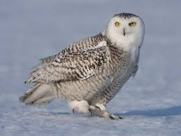

Полярная сова
Полярная сова (офиц. Федеральное казённое учреждение «Исправительная колония № 18 Управления Федеральной службы исполнения наказаний по Ямало-Ненецкому автономному округу») — исправительна я колония особого режима для пожизненно осуждённых в посёлке Харп (Ямало-Ненецкий автономный округ) с участками исправительных колоний строгого и общего режимов. «Полярная сова» находится на Полярном Урале на берегу реки Собь, неподалёку от горного массива Рай-Из. В настоящее время в колонии содержатся около 450 человек. Помимо колонии ИК-18, в посёлке Харп находится также колония ИК-3 строгого режима.
Режимный посёлок Харп был образован в 1961 году при строительстве Трансполярной магистрали. Ядром нового посёлка стал лагерь для заключённых, работавших над прокладкой железной дороги. Впоследствии лагерь был преобразован в колонию особого режима для особо опасных рецидивистов. Статус колонии для пожизненно осуждённых она получила в 2004 году. В 2010—2012 годах в СМИ появились сообщения о том, что некоторые сотрудники колонии оказались замешаны в скандале с фальсификацией явок с повинной: методами психологического и физического воздействия недобросовестные сотрудники выбивали показания из заключённых. Издание «Новая газета» сообщает о 190 поддельных явках, а газета «Известия» — тридцати двух. По версии «Новой газеты», УФСИН по ЯНАО пытались всячески замять дело, так как в него могли быть вовлечены высокопоставленные чиновники. В 2016 году из тюрьмы впервые за её историю (и вообще в истории постсоветской России) был освобождён заключённый, приговорённый к смертной казни — в августе 1991 года Анвар Масалимов, будучи в состоянии алкогольного опьянения, задушил и расчленил своего друга (его приговорили к расстрелу, но пока он дожидался исполнения приговора, в России уже ввели мораторий на смертную казнь и расстрел был заменён пожизненным лишением свободы). При этом Масалимов был освобождён «в связи с принятием закона, улучшающего положение осуждённого» (в ч. 2 ст. 105 УК РФ от 1996 года, предусматривающей в том числе пожизненное лишение свободы или смертную казнь, отсутствует пункт, связанный с рецидивом убийства, в отличие от ст. 102 УК РСФСР, по которой Масалимов был осуждён к смертной казни за «убийство, совершённое лицом, ранее совершившим умышленное убийство»)